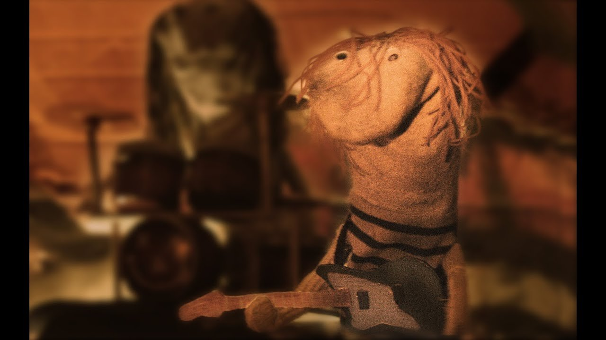

Hoe het begon.
We zijn deze band begonnen om samen plezier te hebben. We spelen graag geweldige songs van onze favoriete bands.
We ontdekten dat er heel veel mensen zijn die ook van deze bands houden. Ze kwamen er vaak niet aan toe deze bands ook live te zien optreden. Wij konden vaak wel in hun eigen stad in een cafe of zaaltje spelen, zo hadden zij het beste van twee werelden.
Na verloop van tijd gingen we ook video's opnemen , want waarom niet! De
platenmaatschappijen waren daar niet zo blij mee. We hebben de muziek
wat aangepast om copyright claims te voorkomen.
Zoals echte sokken betaamt gaan we graag als individuen door het leven en laten we de andere helft van het paar alleen achter in de wasmand...